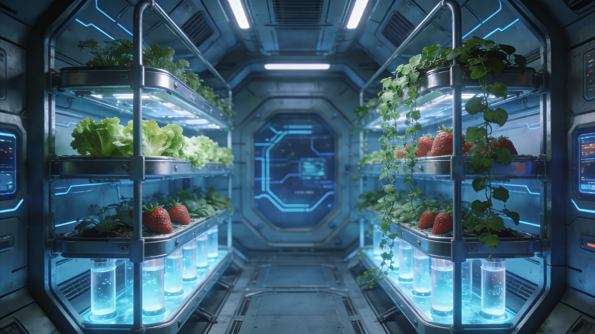
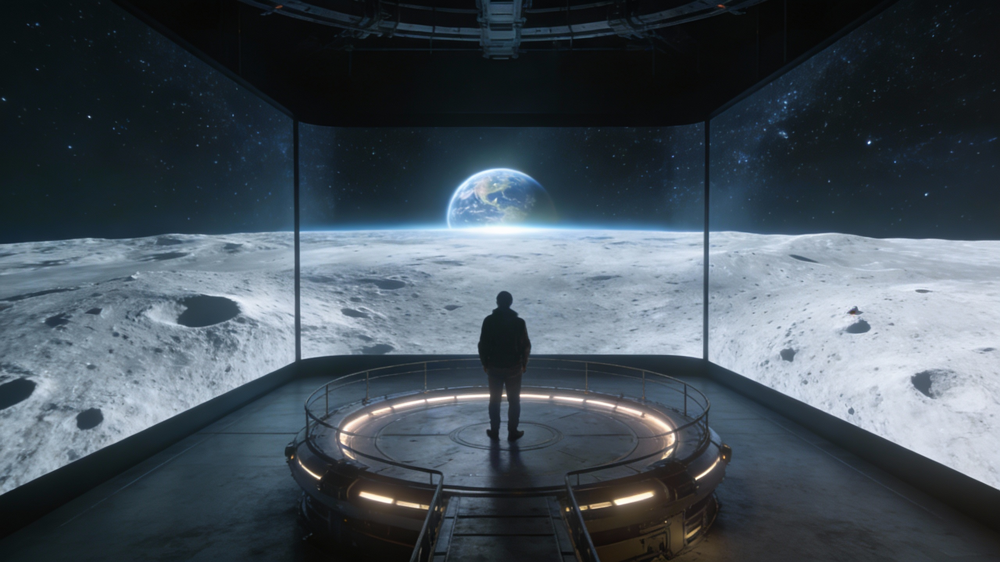
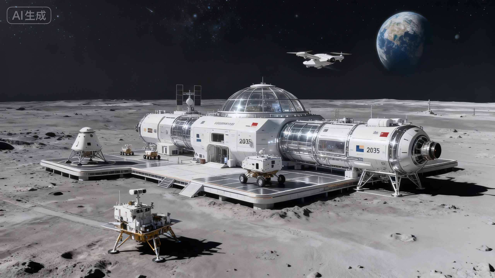
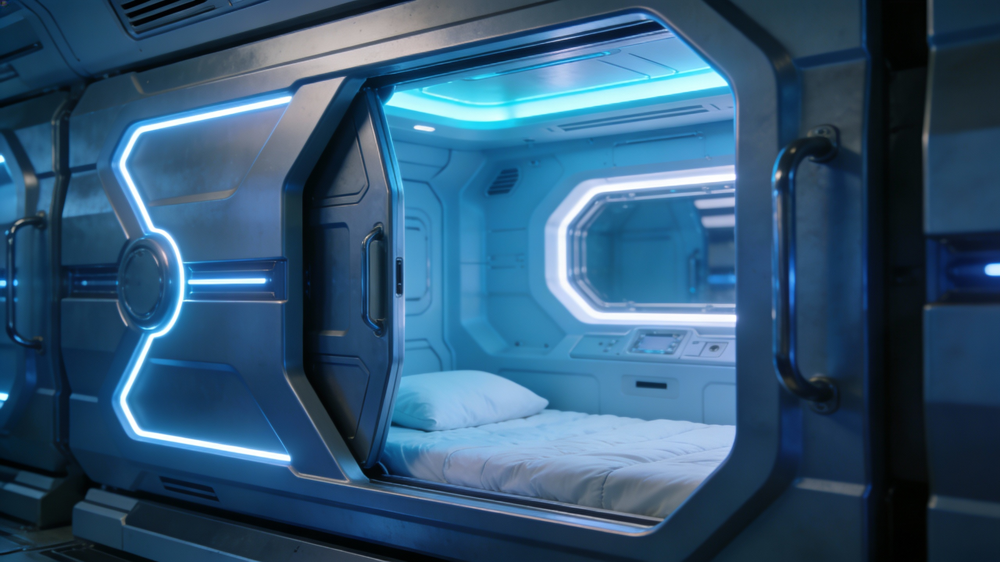
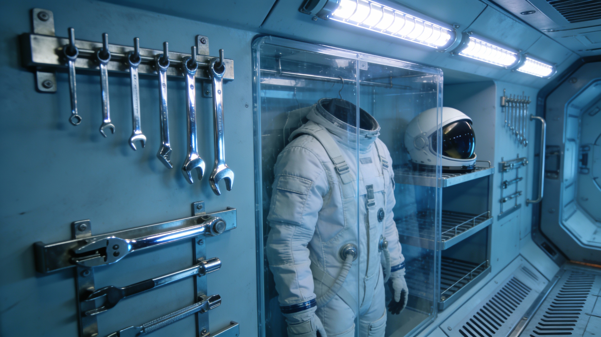
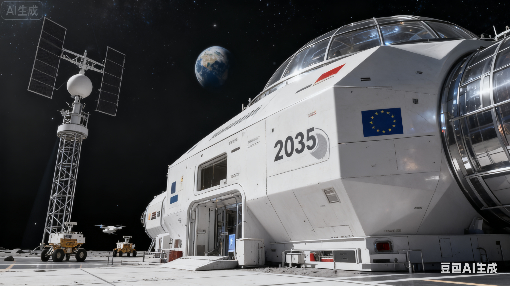

生态生态循环种植舱
全自动垂直农场与藻类反应器，提供新鲜蔬果、蛋白质并同步完成空气净化与水循环再生，是基地生命保障系统的核心。
人类文明迈出地球摇篮，在月球表面建立第一个永久性综合基地

月球基地坐落于月球南极沙克尔顿陨石坑边缘，利用永久光照区与永久阴影区的独特地理优势，同时获取太阳能与水资源。基地占地约 2.3 平方公里，由 15 个功能模块组成，可容纳 1200 名科研人员与工程师长期驻留。
基地采用全封闭式生态循环系统，实现水、氧气、食物的 95% 循环利用率。能源由核聚变反应堆与大面积太阳能电池阵共同提供，总装机容量达 85 MW。
360° 俯瞰月球基地全貌，感受人类工程的壮丽

基地选址于南极近永久光照区，确保太阳能持续供应
阴影陨石坑内蕴藏丰富水冰，为基地提供饮用水与燃料
15 个功能模块呈辐射状排列，便于未来扩展
四大关键模块支撑月球基地的日常运行与长远发展

生态全自动垂直农场与藻类反应器，提供新鲜蔬果、蛋白质并同步完成空气净化与水循环再生，是基地生命保障系统的核心。

居住模块化私人睡眠舱配备人工重力模拟、智能环境调节与心理舒缓系统，保障 1200 名乘员在低重力环境下的高质量休息。

装备集中存放与维护宇航服、月面作业工具及科学考察设备，配备快速除塵、检测与充能系统，保障月表 EVA 任务安全高效。

能源月面太阳能电池阵列与深空通讯天线群，为基地提供清洁能源并保持与地球的高速数据链路。
视频资料记录月球基地建设的关键技术与宏伟蓝图
全方位展示月球基地的设计理念、功能布局与未来愿景，从能源、生态到居住，构建完整的月面城市蓝图。
利用月壤原位 3D 打印烧结成砖——未来在月球上盖房子的革命性建筑材料与技术验证。
🌙 以上视频为项目组基于真实航天数据制作的模拟渲染影像
从第一批构件着陆到全面运营，月球基地的建设之路
无人探测器在月球南极完成 12 处候选站点地质勘测，最终确认沙克尔顿陨石坑边缘为最佳建址。
三艘重型货运飞船先后着陆，运抵能源模块与生态循环系统的核心组件，自动搭建程序启动。
12 名先遣队员入驻临时居住舱，启动生态循环系统并在月面开展首次大规模 3D 打印建筑作业。
两座氦-3 核聚变反应堆成功实现临界，全基地供电能力提升至 85 MW，二期扩建工程启动。
15 个模块全部就位，常驻人员达 1200 人，月球基地正式转入全面科学运营阶段。
计划扩建至 50 个模块，容纳 5000 人，建设月面工厂、天文台与深空探测中转站。